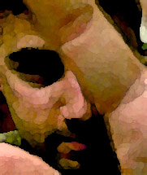

|
|
|
|
Below you will find a list of our members.
Now look: some clan pages let their members write their own bios.
Which is very democratic and all, but most of the bios come out sounding
something like this:
|
REAL NAME: William Gates
QUAKE NAME: ChCHING
HEIGHT: 7'8"
WEIGHT: 320, all muscle
FAVORITE WEAPON: My fists
QUOTE: "I'm just gonna kick you're
ass at Quake, my friend, you wait and see if I don't! And if that
doesn't happen, I'll just take all your money and dance on your grave."
ARCH ENEMY: [DOJ]Juztis
BIOGRAPHY: When he's not kicking
ass in a deathmatch with DOJ, Bill is out kicking ass on the corporate
scene. In the Justice Department's pending legal action, ChCHING
has vowed to take no prisoners. And while he's snoozing in his hot
tub filled with gold coins, with a babe on each arm, Netscape is
hemorraging cash to pay its legal expenses. Death to DOJ! |
Or some such self-aggrandizing nonsense.
You can see how this gets irritating. Why is it that every cha-cha
with a 3DFX card thinks he's the biggest badass who ever wrapped his sausages
around a mouse? Isn't it enough that some day most of them are going
to be rich beyond my wildest dreams because they came up with a game controller
that runs on brainwaves?
So, I, Chzdanish, have decided that if I can't
be good at Quake, at least I can make the rules here. And the first
rule is, I write the bios (or at least, I get to edit them. Hee hee!).
Here goes.
|  |
REAL NAME: Adam Sherson
QUAKE NAME: Deslock
HEIGHT: 5'11"
WEIGHT: 130 lbs, including Palm
III and copy of Teach Yourself Access in 14 Days.
FAVORITE WEAPON: Blaster, Rocket Launcher,
Railgun, Hyperblaster,Grenade
Launcher,Machine Gun, supershotgun,
QUOTE: "Say, Chzdanish, I just went
out and spent $800 on a new motherboard, processor, and Voodoo II card,
and I gained 5 frames per second! Now I'll continue to kick all your
asses. Here, want my cast-off old video card? Only twenty five
dollars..."
ARCH ENEMY: Chzdanish (though he
doesn't know it yet...)
BIOGRAPHY: After 10 years of University
studies (which he calls his "decade of excellence", and which everyone
else calls "fucking off"), Adam has found his place at UMass Transit as
the Acting Manager of Information Systems. This, as we have found
out, is a sophisticated euphemism for "the guy who forgets to replace the
batteries in the 'uninterruptable' power supply." Oddly enough, as
Deslock, Adam shows his real prowess with information systems; when
Quake doesn't run properly for any reason, it is fixed through a combination
of native intelligence, tenacity and hard work. |
|
REAL NAME: Frank Levine
QUAKE NAME: Barclay
HEIGHT: 5'11"
FAVORITE QUOTE: "So, Lockheed called
today, and I told them that I wouldn't work for less than $1.2 million
and a company car, because that's what I'm worth."
HOBBIES: Writing code that is so
fucked up, his former co-workers will tear their own limbs off in frustration
for months.
BIOGRAPHY: Having garnered praise
for his admittedly stellar work on the UMTS payroll and employee database,
Frank continues his tradition of doing nothing, at Lockheed-Martin in his
new job. He hasn't told us what his new job is yet, since it's top
secret or something...but rest assured that you, dear reader, will suffer
for it in some way. Imagine the following scenario: You are
sitting in your favorite easy chair, reading a good book. HAH!
What a laugh; you haven't read a book in years. Anyway, your
sitting in your favorte chair playing Quake, when from out of the sky comes
an unearthly beam of green light, which touches your leg and POOF!
You disappear in a puff of pork-scented smoke. Your last thought
might be to blame the almighty for such an untimely demise, but you should
really blame Frank. Take my word for it. |
|
REAL NAME: LJ Weslowski
QUAKE NAME: Predator
HEIGHT: 6'
BASIC SUBSTANCE OF WHICH HE IS COMPRISED:
Beanie Weenie and Olean.
FAVORITE WEAPON: An aspirated screech
known to sterilize passersby.
FAVORITE ANIMAL: The cow, for some
reason.
QUOTE: "YAHOO!" (usually screamed
in some unsuspecting, and suddenly deafened, person's ear).
HOBBY: Spelunking for clean food
containers around the Superfund site known as his desk. Self abuse.
Talking about paintball.
BIOGRAPHY: Former truck driver
for the Army, at some point L.J. decided that he had a neuron or two, and
decided to come to college and become UMTS Operations Supervisor.
Now fully rehabilitated from his days as a double-clutching trained killer,
Predator has replaced aggression with paintball and Quake. He also
regularly tries to pick up his boss and coworkers, and throw them against
the wall, thus proving that you can take the boy out of the Army, but you
can't take the Army out of the boy. His ability to bore you with
talk of various paintball weapons is legendary, second only to his ability
to eat foods that would render a dog insensate. |
|
REAL NAME: Shannon Williams
QUAKE NAME: Sasquatch
HEIGHT: 6'4"
FAVORITE WEAPON: Rocket Launcher
QUOTE: "...!"
MOST COMMONLY DESCRIBED AS:
A nice man, good bus driver...I never thought of him as a murderer.
I mean, who knew? He didn't talk all that much. He mostly just
kept to himself. |
 |
REAL NAME: Kevin Bjork
QUAKE NAME:
Tuco
HEIGHT: 5'9"
FAVORITE WEAPON: Railgun
QUOTE: Something sensible and friendly,
probably. Sickening, isn't it?.
ARCH ENEMY: Can't think of a one.
Makes Michael Landon look like a violent schizophrenic ax-murderer.
BIOGRAPHY: As an Engineering major,
Kevin's future seems bright, but what he doesn't know is that he's destined
to become head writer at Hallmark's Greeting Card division. Tuco's
friendly demeanor and air of general competence means that the author of
this site is unable to think of anything to say that disparages him.
So: Tuco is a jerk. A complete knee-biter. |
|
REAL NAME: Dave Etler
QUAKE NAME: Chzdanish
HEIGHT: 5'9"
FAVORITE WEAPON: BFG
QUOTE: "SherS-O-O-ON-N!"
MISSION IN LIFE: Build a game controller
that runs on brainwaves and make millions.
CHANCES OF SUCCESS: Incalculably
submicroscopic.
WHY HE BOTHERS PLAYING: "Hey, mediocrity
is my life, man."
GETS A CHARGE OUT OF: Railgunning
even the worst player while frantically ignoring the extreme luck it took
to achieve such a feat.
BIOGRAPHY: Consumed with thoughts
of growing old, Dave has resolved to deal with the problem by working at
UMTS, where he can surround himself with eighteen-to-twenty-two-year-olds.
Recently, while the members of the MTV demographic who work at UMTS were
trying to figure out how to get Chzdanish to leave his Staff position,
he outsmarted them all by getting himself a cushy full-time staff position,
"Coordinator" of safety and training. HAH! They'll never get
him to leave, now! AAHHH HA HA HA HA HA! Of course, he is overlooking
with a fervor bordering on religious the fact that it's just a temporary
posting until they can find someone who is actually qualified for the position.
However, Dave figures he can convince the right people to let him stay
by exhibiting his native intelligence, emphasizing his organizational skills,
and by welding his office door shut and epoxying himself to his chair. |
|
|
REAL NAME: Rob Sterner
QUAKE NAME: Spiceboy
HEIGHT: 6'2"
FAVORITE WEAPON: His mouth.
QUOTE: "Blahblahblahblahblahblahblahblahblahblahblahblahblahblahblahblahblah..."
MISSION IN LIFE: Make the Guinness
book of records for having the highest number of keys bound to scintillating
and witty phrases like "DIE!" and "Heh!"
LIFE'S AMBITION: To be a character
in a William Gibson novel.
FAVORITE THING TO INGEST: Lithium.
BIOGRAPHY: When one looks at Rob,
one is instantly reminded of the movie Hackers. Scientists are in
their labs this very moment trying to come up with a theory that explains
why such a terrible movie could have actually influenced Rob to dress like
a William Gibson character. As well, Rob talks so fast and so much that
some have theorized that he actually is a self-aware TRS-80 that believes
it's communicating directly with humans using a T3. It is the author's
opinion that Rob is in some heavy denial about the death of cyberpunk. |
|
REAL NAME: Bob Riley
QUAKE NAME: Schizophrenic
HEIGHT: 6'
LIKES: Beer, cigarettes, more beer,
more cigarettes.
DISLIKES: Lack thereof.
FAVORITE WEAPON: His patented "hangover
fart" which can singe the nose-hairs of a person thirty feet away.
Although no one has thought of a way to include this in the game, he is
nevertheless doing a great deal of R & D.
QUOTE: "I could help you with that,
but it would interfere with my beer consumption, plus I don't like you."
MISSION IN LIFE: To get the American
Psychology Association to adopt a new diagnostic category called "compulsive
sarcasm."
BIOGRAPHY: Probably one of the most
annoying people you'll ever have the misfortune to meet, Bob is the living
embodiment of the phrase "a mind is a terrible thing to waste." Believing
their son was endowed with an incredibly high IQ, Bob's parents had incredibly
high hopes for their son. Unfortunately, it turned out that the IQ
test makers had their signs reversed on a crucial equation. After
obtaining his degree in Biology (that's where all the chicks are...unfortunately
for them), in a scant 5 and a half years, Bob has opted to stay at Transit,
stating that he needs downtime after his hectic undergrad schedule of two
classes a week. |
 |
REAL NAME: Jeremy Wardwell
QUAKE NAME: Roswell
HEIGHT: 6' 1"
FAVORITE HAIRCARE PRODUCT: Tar
FAVORITE MOOD: Schmoozy.
PROBABLE OCCUPATION AFTER TRANSIT:
Used car salesman, lounge singer, senator.
QUOTE: (shouted through Mr. Microphone)
"HEY, GOOD LOOKING! BE BACK TO PICK Y'UP LATER!"
BIOGRAPHY: Exuding an oily charisma
all his own, Jeremy is by far the smoothest of the UMTS clan members.
After recently clawing his way up the ranks of Transit to pry Chzdanish's
ass from his beloved staff position, Jeremy has quickly acclimated to his
new position of power, ordering around underlings in a superior tone of
voice and abusing his new privileges left and right. When he isn't
squandering taxpayer dollars, he's playing Quake with a fair amount of
skill, leaving an oily sheen all over his mouse and keyboard. |
|
REAL NAME: Chris Walker-Ray
QUAKE NAME: Havoc
HEIGHT: 5'11"
HOBBIES: Drawing pictures of Transformers
(no, we don't know why, either).
QUOTE: "Hey, Bob, didja see this
new picture of Megatron?"
BIOGRAPHY: Chris is a 21 year old
Amherst native who still lives with his parents, which explains a few things.
One of the newest members of our clan, Chris has nonetheless showed increased
levels of skill in the area of Quake playing. Chris has the general
good attitude and above-average intlligence that assures him a safe and
sound future in whatever field he applies himself to, which is why the
author hopes he gets hit by a bus REAL soon. |
|